- 00000018WIA30EAB030GYZ
- id_123742101.24
- Sep 18, 2025 5:46:45 PM
VRE configuration and iVRF diagnostic failure troubleshooting
Troubleshoot these error conditions: the VRE configuration failed or the VRE configuration was successful but the iVRF diagnostic failed.
Overview
This document describes the troubleshooting guide for the following error conditions. This is only a supplement to existing troubleshooting procedures.
- VRE configuration is successful but iVRF diagnostic fails.
- VRE configuration fails.
Diagram
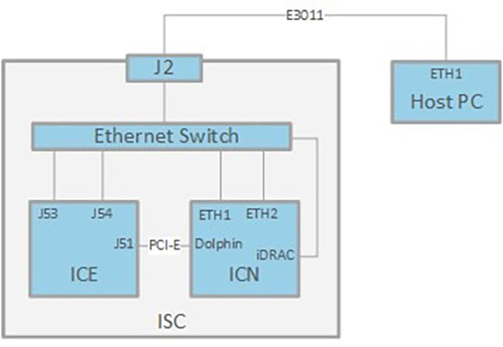
Precondition
Network path check
Before starting troubleshooting, make sure the connection between ICE, ICN and the Host PC is good.
- Set up your laptop IP address different with the node you will test on ICE/ICN (10.0.1.50 for example).
- Disconnect the Ethernet cable from the suspected node on ICE/ICN.
- Connect the laptop and ping the host from there.Note The host cannot be pinged there is an issue with either the Ethernet switch or the Ethernet cables.
- If it is OK, reconnect the Ethernet cable to suspected node, and disconnect its other end from 8-Port Ethernet switch.
- Connect the Ethernet cable to the laptop directly and ping the suspected node.
Speed mode check
All the Ethernet cables should be running at 1000 Mbps mode. 100/1000 LED on Ethernet switch front panel should be green. If any one of the LEDs is orange, replace the Ethernet cable with a new cable.
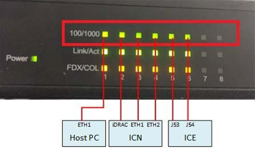
Available ICE/ICN diagnostics
Depending on the fault condition, use the appropriate diagnostics to help isolate the root cause.
| Diag Folder | Diag Name | Purpose |
|---|---|---|
| Acquisition/Pulse Generation | ICE Board Level Diagnostics | ICE BLD is an ICE internal main part diagnostic tool, however, it will not diagnose PCI-E outside connection. |
| ICN Quick Health Check | ICN Hardware Health | ICN Quick Health Check, is a shorter form of diagnostics that would cover the ICN H/W, Communication and PCIe adapter card Health status. |
| ICN Network Connection | Host-ICN Ethernet Path | The purpose of this diagnostic is to make sure of network connectivity between the host and an ICN. This diagnostic helps identify network failure points between a host and an ICN by sending an ICMP (ping) packet from the host to the ICN. The ICN is expected to acknowledge the packet by responding back to the host. |
| Host-ICN Ethernet Stress Diagnostic | The purpose of this diagnostic is to stress the Ethernet network path between the host and ICN to make sure that it meets the minimum throughput requirements of 50 MB/sec. | |
| Host-ICN IPMI Path Diagnostic | The purpose of this diagnostic is to make sure of the IPMI remote communication link from the host to the ICNs. The IPMI interface is used for remote management of the ICNs. This diagnostic uses the VRE configuration file /w/config/vre.cfg that specifies the IP numbers or the ICNs IPMI Ethernet interface. | |
| Host-ICN Remote Shell | The purpose of this diagnostic is to make sure of remote shell connectivity to the ICN. This diagnostic attempts to execute a command on the ICN via the remote shell protocol. | |
| ICN Hardware Diagnostics | ICN Hardware Intensive Diagnostics | Note The ICN Hardware Intensive Diagnostics are being phased out due to hardware and software updates. Instead, use the Doing the Image Compute Node (ICN) hardware health diagnostic procedure. ICN Hardware Intensive Diagnostics, provides a comprehensive form of diagnostics that would cover diagnostics as per below item.
|
| ICN Hard Disk Stress | The purpose of this diagnostic is to test the disk throughout for both of the hard disks on an ICN. Some application uses hard disks to store acquired data for further processing. This diagnostic essentially makes sure that the ICN hard disk performance is fast enough to keep up with the incoming data during acquisition. | |
| ICN Miscellaneous Diagnostics | ICN Reconstruction Diagnostics | VRE Reconstruction Diagnostics includes the following items:
|
| ICN Sensors Display | This diagnostic shows the sensor values for all ICNs installed in the system. Three categories of sensor values are shown: Fan Speeds, Temperatures, and Voltages. The display format includes the ICN number, sensor name, value and units, minimum value, maximum value, critical value, and whether critical values were exceeded. | |
| iVRF Communication Diagnostics | ICN-ICE Datapath: Tests the communication data path between ICN and iVRF at the ICE across the PCIe cable. This datapath is used to pass iVRF filtered MR data from ICE to ICN for image reconstruction, and to pass control information from ICN kernel module to iVRF. This diagnostic essentially makes sure that the ICN PCIe switch, the PCIe cable, and the PCIe switch on the ICE daughter board and the PCIe switch on the mother board, and the iVRF memory all work reliably to support the communication between ICN and ICE. |
ICE/ICN troubleshooting
VRE configuration successful But iVRF diagnostic failed
VRE configuration is successful but the iVRF diagnostic failed. Check PCIe cable, ICE BLD, Dolphin link LED, and iVRF Diagnostics.
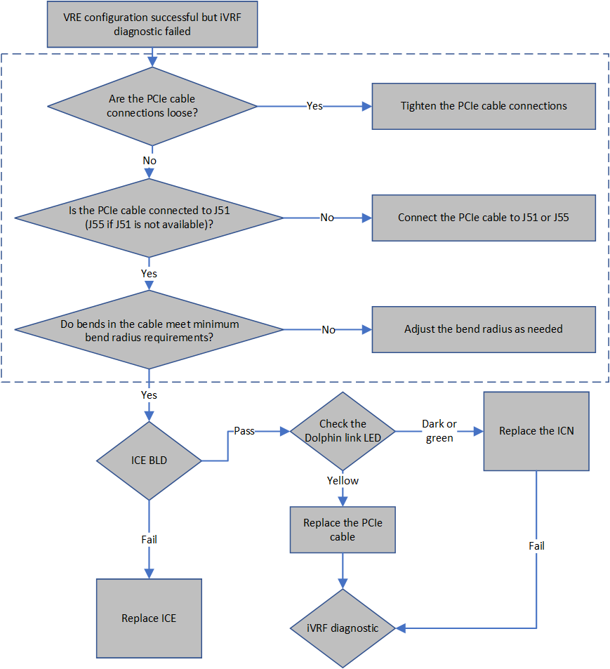
VRE configuration failed
Under this condition, the system cannot start, so the service browser and diagnostic cannot be running.
VRE configure could be classified into six milestones, specific trouble shooting actions could be adopted according to which milestone dose the fault appears.
The following table shows the six milestones during VRE configuration.
| Milestone | Description |
|---|---|
| 1 | Starting VRE Installation and Configuration at: Mon May 15 12:20:08 CST 201 |
| RDS Configuration: Disabled | |
| Copying OS contents from VRE OS disk to host machine is needed | |
| mount: block device /dev/sr0 is write-protected, mounting read-only | |
| Copying VRE OS contents | |
| VRE OS content successfully copied | |
| Ejecting OS media | |
| 2 | Performing the OS integrity check for VRE OS |
| OS integrity check completed successfully for VRE OS | |
| IVRF system detected | |
| VERBOSE reporting activated. Printing debug information. | |
| Entering pre-detect phase: | |
| MGD subnet is 10.0.1.0 / 255.255.255.0 | |
| Entering ICN detection phase: | |
| Detect via NMAP | |
| ICN discovery phase completed, detected following ICNs: | |
| 10.0.1.223 [ 84:7B:EB:D7:74:F4 ] | |
| icn1, bmc ipaddr: 10.0.1.223, bmc macaddr: 84:7B:EB:D7:74:F4 | |
| Received BMC IP Address: 10.0.1.223 | |
| Determining ICN Vendor | |
| Dell ICN: Bios upgrade not required | |
| Launching ICN Remote Console in the background....requires license | |
| Entering ICN BMC validity check phase: | |
| vrevalidtest: Checking ICN BMC validity... | |
| We matched a valid ICN BMC configuration ! | |
| 3 | Entering pre_install phase |
| Entering install phase: | |
| Inserted logfile marker for NFS mount | |
| Issuing IPMI chassis OFF command to device @ 10.0.1.223: Unsuccessful. Trying again. | |
| Successful | |
| Issuing IPMI chassis ON command to device @ 10.0.1.223: Successful | |
| Setting ICN 10.0.1.223 to pxeboot: Successful | |
| 4 | Waiting 360 seconds (max) for 1 NFS mount requests. |
| ...................:1: | |
| 10.0.1.221 | |
| key: 10.0.1.221 value: 24:6e:96:3c:16:d0 | |
| 10.0.1.221 [ 24:6e:96:3c:16:d0 ] | |
| Returned from watch_log after 101 seconds. | |
| 10.0.1.221 | |
| Mount requests received in 101 seconds. | |
| 5 | Inserted logfile marker for ICN OS load/reboot |
| Waiting 1800 (max) seconds for ICN OS load/reboot. | |
| 10.0.1.221 24:6E:96:3C:16:D0 | |
| Waiting 250 seconds to allow ICNs to finish starting. | |
| ICN OS load completed in 753 seconds. | |
| 6 | ICNs booted with following temporary IP addresses: |
| 10.0.1.221 [ 24:6E:96:3C:16:D0 ] | |
| Entering ICN DMI validity check phase: | |
| vrevalidtest: Checking ICN configuration... | |
| Checking 10.0.1.221 [ 24:6E:96:3C:16:D0 ] | |
| VRF: 0 | |
| BVER: 1.2.10 | |
| SNAME: ICN Gen6 | |
| DRIVES: 2 | |
| PCIE: 1 | |
| CMAN: General Electric Company | |
| BNAME: 086D43 | |
| CVER: Not Specified | |
| CASS: 5931000-3rev4 | |
| IB: 0 | |
| We matched a VALID ICN configuration ! | |
| Entering post_install phase: | |
| Entering icn_config phase | |
| ICN data file transfer: | |
| Completed for 10.0.1.221 | |
| Configuring 10.0.1.221 [24:6E:96:3C:16:D0] as ICN1 and 10.0.1.100: Completed. | |
| Dell System...Getting cores per socket | |
| [All] cores are available | |
| Rebooting ICN1 | |
| Entering host_config phase: | |
| Entering post_host_config phase: | |
| Waiting for the final reboot to finish........ | |
| Final reboot is complete in 130 seconds... | |
| Waiting 30 seconds to allow ICNs to finish booting |
- If you get stuck in milestone 1, the VRE OS DVD is not good. Use a different VRE OS DVD.
- If you get stuck in milestone 2, follow the steps below, for troubleshooting:
- Log on by root/operator and type following command:
{sdc@blrmr194}[107] /export/home/insite/server/cgi-bin/getIcnVendor.pl
- If Dell|10.0.1.2xx (xx is random values) comes back, this means IPMI is successfully working on ICN. Implement 2 to make extra sure that ICN BIOS is in communication.
- If error BMC not reachable Check BMC connections on the ICN and retry the diagnostics comes back, this means the IPMI commands are not working. Go to step 3 to do a check of the racadm connection.
-
SSH login IDRAC IP address to make extra sure that ICN BiOS is in connection.
{sdc@GEHC}[XX] /export/home/insite/server/cgi-bin/racadm <BMC_IP> "get BIOS"
If the feedback is the same as the following, it means iDRAC and BIOS is normal:
spawn /usr/bin/ssh -oStrictHostKeyChecking=no –
oStrictHostKeyChecking=no root@icn1-bmc racadm get BIOS
FIPS mode initialized
root@icn1-bmc's password:
BiosBootSettings
IntegratedDevices
MemSettings
MiscSettings
NetworkSettings
OneTimeBoot
ProcSettings
PxeDev1Settings
PxeDev2Settings
PxeDev3Settings
PxeDev4Settings
SataSettings
SerialCommSettings
SlotDisablement
SysInformation
SysProfileSettings
SysSecurity...
If the feedback is not same as above, go to step 3 to check the racadm connection.
-
Do a check of the racadm connection.
- From the host, launch Telnet iDRAC. See Launching iDRAC.
- Restart the ICN. Press the Power button in the front panel, until the ICN is off, and then power on. Press F2 during ICN server start to enter setup.
Figure 4. Restart ICN 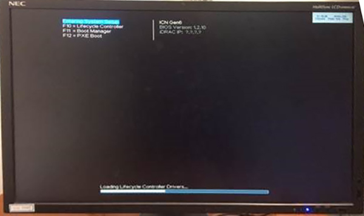
- Select iDRAC Setting.
Figure 5. iDRAC Setting 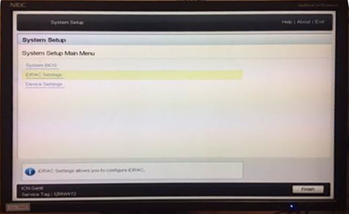
- Select Network and make sure the IP address is 10.0.1.2xx.
- Select User Configuration and make sure the user name is root and set the password to calvin.
- Press ESC to exit and wait the system to start.
- Go back to the MR console and try to config the VRE again.
- If you get stuck in milestone 3, enter the Bios and check the PXE setting:
- From the host, launch Telnet iDRAC. See Launching iDRAC.
- Restart the ICN and press F2 to log in to BIOS.
- Click system BIOS.
Figure 6. System BIOS 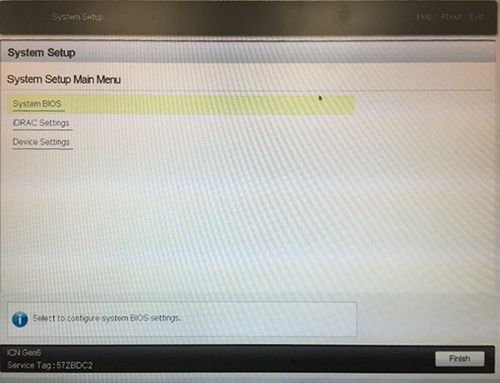
- Click Boot Settings.
Figure 7. Boot Settings 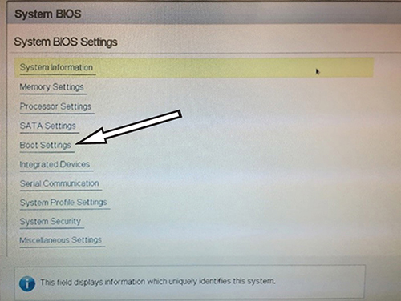
- Click BIOS Boot Settings.
Figure 8. BIOS Boot Settings 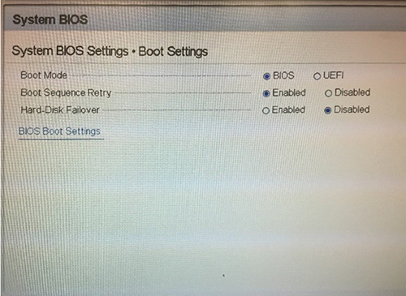
- Make sure Hard Drive Sequence is C. If it is A or B, click Boot Sequence to change.
- Go back to System Setup and click Device Settings.
Figure 9. Device Settings 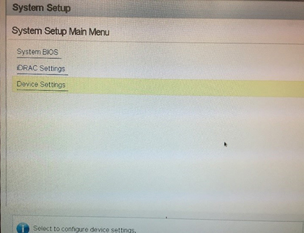
- Click Integrated NIC 1 Port 1.
Figure 10. Integrated NIC 1 Port 1 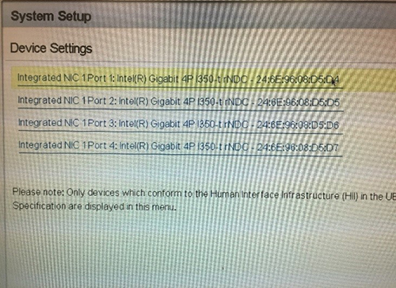
- Click NIC Configuration.
Figure 11. NIC configuration 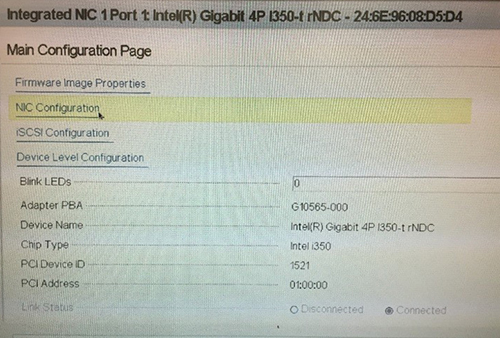
- Make sure Legacy Boot Protocol is set to PXE.
Figure 12. Legacy Boot Protocol 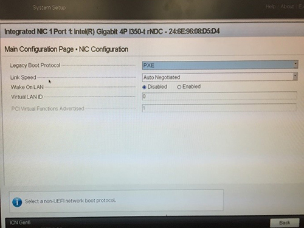
- If you get stuck in milestone 4, check the ICN-Host Ethernet connection.
- If you get stuck in milestone 5 or 6, take a screenshot of the iDRAC remote monitor window and ask the engineering team for support.
Note If your action still cannot identify the problem, collect the following files from host and ask the engineering team for help:- On host, open a terminal.
- Type ssh sdc@vre. Answer yes if asked for unknown host.
If this step returns an error, it means ICN is offline. In this case, skip steps 3 to 5.
- Enter adw2.0 as the password.
- Type cp ~sdc/ads.log* /usr/g/service/log.
- Type "exit to exit to host.
- Send the following files to the engineering team:
- /usr/g/service/log/ads.log and /usr/g/service/log/ads.log.X (X means 1-9) collect the log from other servers
- /usr/g/service/log/vretpsreset.log
- /usr/g/service/log/vreBmcUpCheck.log
- /usr/g/service/log/vrecontrol.log
- /usr/local/bin/install/log/VRE_Install.log
- /usr/local/bin/install/log/VRE_Install_Verbose.log
- /usr/local/bin/install/log/icn1_install.log
- /usr/g/service/log/vrediags.log
- /usr/local/bin/install/log/VRE_Install_Errors.log (if it exists)
- Log on by root/operator and type following command:
Reference
Dolphin Link LED
| Dolphin type | Dark | Yellow | Green | Green and Blinking |
|---|---|---|---|---|
| Dolphin 1 | Power off | Power on and link down | Power on and link up | Power on and data transmitted |
| Dolphin 2 | No cable installed | Cable Installed. No Link | Cable Installed. Link Operational | n/a |
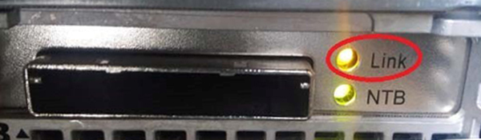
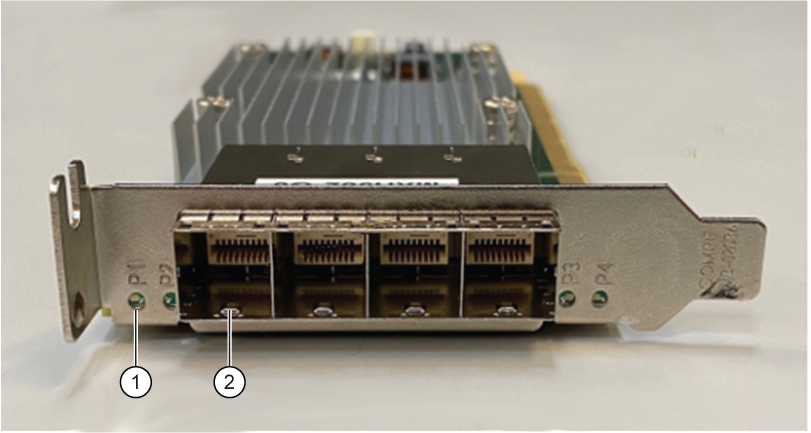
| Item | Description |
|---|---|
| 1 | P1 LED |
| 2 | P1 Note For Dolphin 2 the PCIe cable must be connected to P1. |
How to get an IP address
You can examine the iDRAC address:
- Using the ICN front panel: .
Figure 15. iDrac address - Running arp-a. Address will be feedback with the name inc1-bmc.
Figure 16. arp-a address 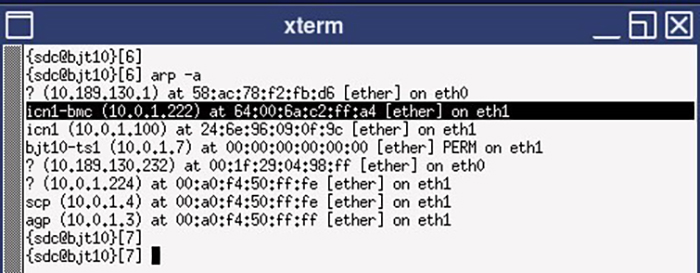